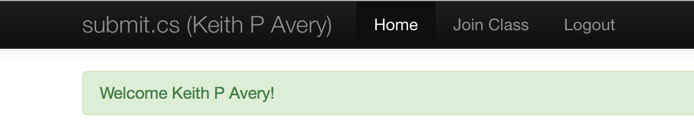

lab00 : Getting started with C++ functions and github's web interface
| num | ready? | description | assigned | due |
|---|---|---|---|---|
| lab00 | true | Getting started with C++ functions and github's web interface | Tue 04/03 10:00AM | Mon 04/09 11:59PM |
Introduction
Your first lab for this week is an introduction to your mentor group and programming on CSIL and in the Computer Science (Phelps) lab. The intended outcomes are:
- Getting to know your mentor and pair programming partner
- Writing a simple C++ program
- Learning about github’s web interface
This lab must be completed INDIVIDUALLY. In the subsequent labs you are encouraged to work with your programming partner.
Get to know your mentor and programming partner:
-
Take note of your course mentor and pair programming partner at mentor group. Get to know your mentor:
- Meet them during the open lab hours on Monday or Friday. The exact time and location can be found at lab and office hours schedule
- Contact your mentor via Piazza or email to confirm your meeting in Week1. During your meeting, set up a time when you can regularly meet for the remainder of the quarter. Your mentor will send you feedback on your work to your umail account. Make sure your line of communication with your mentor is working and talk about any preferences you may have. Your mentor will be your first point of contact for the quarter!
-
Connect with your programming partner via email or in person and determine times when you can work together outside the prescribed lab hours. You will need to set aside 2 to 3 hours each week to work on assignments. Get your partner’s contact: phone number or email.
This lab must be completed INDIVIDUALLY. In the subsequent labs you are encouraged to work with a programming partner.
You may now go ahead and complete the following steps:
- Create a College of Engineering computer account, a github account and sign into our github organization
- Learn how to open a terminal on a lab or personal computer.
- Learn basic unix commands and create your lab00 directory.
- Learn how to edit a text file used for writing programming code.
- Write an actual program in C++.
- Compile your program and see if it runs.
- Submit your program for grading.
- Check Submission Results
- Create a github account and explore its web interface
- Perform basic git configurations
Step 1: Create an Engineering (CoE) Account, a github account and sign into our class github organization
Create an CoE account if you don’t have one already
To log in to the machines in the Computer Science labs, or to connect remotely, you will need a College of Engineering account.
You can create an account online at https://accounts.engr.ucsb.edu/create.
If you are enrolled in any CoE course this quarter (including CS16), you can create your account immediately. If you are not, you will need to contact the ECI Help Desk at help@engineering.ucsb.edu.
Step 1: Create a github account
Sign up for a free account on Github. Use your official ucsb email when signing up. Sign into Github with your github account.
Sign up to be added into our class organization
To join our github organization, follow these easy steps :
- click on this link: https://ucsb-cs16-w18-signup.herokuapp.com/. You should see the following welcome message (with the org name as ucsb-cs16-w18), click on the blue “sign in with Github” button:

- The next screen asks you to authorize our app to add you to our class organization. Click on the green “authorize application” button.

Enter your github and you should see the following screen that shows you were successfully added to our class organization:

Step 2: Open a Terminal
The first step in every assignment will be to open a terminal window, which will be the environment you use to write, compile, and run your programs.
-
If you are working on a machine in the Phelps 3525 please see Step 2a for further instructions.
-
If you are working on a machine in the Computer Science Instruction Lab (CSIL), you’ll be working on one of the following machines:
csil-01.cs.ucsb.edu,csil-02.cs.ucsb.edu, etc. (thoughcsil-48.cs.ucsb.edu). Please see Step 2a for further instructions.
If you are working on your laptop, whether Windows, Mac or Linux, the instructions below
will tell you how to connect to csil.cs.ucsb.edu. For now its okay to connect to that server, however in the future please connect to one of the following machines:
csil-01.cs.ucsb.educsil-02.cs.ucsb.edu, etc.- etc.
- through
csil-48.cs.ucsb.edu
You’ll get much better performance on those individual machines, because they are much less heavily loaded and have newer hardware, as compared to csil.cs.ucsb.edu.
- If you are working on your laptop and it is a Mac or Linux machine, go to Step 2b.
- If you are working on your laptop and it is a Windows machine, go to Step 2c.
Step 2a: Opening a Terminal on a Phelps or CSIL Lab Machine
-
Log in to the machine using your CoE account credentials (i.e. your username and password) created in Step 1.
-
Find the Activities menu, which is in the top-left corner of the screen. Click on it to open the menu.
-
Next, type “shell” in the search box. Then click the “Terminal” application which appears.
-
You should now see a terminal window open. You can open more tabs or windows from the Terminal application’s menu.
Step 2b: Connecting to CSIL via SSH on Mac OS X or Linux
To get started on Mac OS X or Linux, you first need to open a terminal program. This involves slightly different steps on either OS.
On Ubuntu (an example of a Linux OS):
- Find the search menu. It appears at the top of the Unity bar:

- Click on that icon to open the search menu. Then type “terminal” and click on the “Terminal” application which appears:

On Mac OS X:
- Open the “Terminal” application. It is found inside the Applications folder of your main drive, inside the Utilities subfolder. The icon looks like this:

You can also find it using Spotlight by typing “terminal” and pressing ENTER.
Once you have a terminal window open on your machine, you next need to connect to the CSIL server remotely.
You will do this using a UNIX command (an internet protocol, really) called SSH (short for Secure Shell).
Type the following command in your terminal, replacing USERNAME with your CoE username:
$ ssh USERNAME@csil.cs.ucsb.edu
SSH will first ask you a question which looks like this:
The authenticity of host 'csil.cs.ucsb.edu (128.111.43.14)' can't be established.
RSA key fingerprint is 90:ab:6a:31:0b:81:62:25:9b:11:50:05:18:d3:1a:b5.
Are you sure you want to continue connecting (yes/no)?
Type yes and then ENTER to continue. It will next ask for your CoE account password. When you type it in, nothing will show on the screen (not even dots). However what you type is still being sent and once you are finished with your password, you can press ENTER to login.
You should now be remotely connected to CSIL! You can make sure by typing the following command (which will tell you what machine you are currently issuing commands to):
$ hostname
This should show csil.cs.ucsb.edu. You can now do anything you could normally do in a terminal window in CSIL or the Phelps lab (except run graphical programs).
Extra Note: Graphical Forwarding
This is not required or necessary to use CSIL remotely, so if you are not interested, go ahead and skip this part.
If you have an X windows system installed you can get graphical applications running by forwarding X from CSIL to your machine. To do this, add the -X option to the SSH command like this:
$ ssh -X USERNAME@csil.cs.ucsb.edu
X windows is almost always installed on graphical Linux, and can be installed on Mac OS X as XQuartz (which can be found at http://xquartz.macosforge.org/landing/).
Step 2c: Connecting to CSIL via SSH on Windows with PuTTY
To connect remotely on Windows machines, we recommend using a program called PuTTY. This program is a well-known and widely-used SSH client for the Windows OS.
First, download the program from http://www.chiark.greenend.org.uk/~sgtatham/putty/download.html. You only need the executable file putty.exe, but feel free to download any other programs that you want. The page includes portable versions and a version with an installer. Always make sure to download PuTTY from this site, so that you can make sure it is the correct program.
Once downloaded, run PuTTY like you would open other programs. If you just download the putty.exe file, you can open it from your downloads folder directly. You can also move it to any other location on your machine and open it from there. If you used the installer, open PuTTY from the Start Menu.
When PuTTY opens, you should see a window that looks like this:

Type csil.cs.ucsb.edu into the box labeled “Host Name (or IP address)”. Leave the “Port” setting at 22 and leave the “SSH” button checked. The window should now look like this:

Then click on the “Open” button to connect. PuTTY will then show a prompt which looks like this:

Click “Yes” to accept and have PuTTY remember CSIL’s key.
Once a connection is made, CSIL will ask for both your username and then your password. Type in your CSIL username and password. The password will not be shown on the screen, but the characters you type are being used. This step will look something like this (with your username instead of “username”):

Once you have logged in successfully, you should be connected remotely to the CSIL server. Run the following command to make sure (this command shows the full host name of the machine you are logged in to):
$ hostname
This command should output csil.cs.ucsb.edu. You can now do anything in this terminal window that you could do on a CSIL machine or a Phelps lab machine, except run graphical applications.
If you want to run graphical applications, instead of using puTTY, you can use other programs, such as MobaXterm.
Step 3: Create cs16 and lab00 directories
Now that your environment is set up, you next will need to create a directory (a folder is also called directory in Linux) that will contain all your work for the course. Then, inside that directory, you will need to create another directory to contain your work for this assignment.
To create your CS16 directory, use the mkdir command. Type the following in the terminal and press enter:
$ mkdir cs16
The $ represents the terminal prompt; you won’t type this character. Whenever you see it, that means that the following command is intended to be typed into the terminal window and run by pressing enter.
You can see list of files and directories in the current directory with ls command. Type the following in the terminal and press enter:
$ ls
You should be able to see the directory you just created i.e. cs16
Now move into that new CS16 directory with the cd command as follows:
$ cd cs16
And create and move into a lab00 directory:
$ mkdir lab00
$ cd lab00
At any time, you can check what directory you are current in with the command pwd. It will output the full path of the current directory. For example, if you are inside your lab00 directory, you might see:
/cs/student/yourcsilname/cs16/lab00
Knowing how to navigate a UNIX environment and issue UNIX commands is VERY valuable to computer scientists and engineers. To learn more UNIX commands, there are lot of cool Web resources and books on the topic. This is one website I found that’s a good introductory page: Useful unix commands
Step 4: Editing text files for programming
Let’s take a little detour on how to best create and modify text files. These will carry all the code (regardless of computer language) that we want to assemble, compile, and execute.
You are surely all familiar with Microsoft Word as a widely-used “word processor”, but please DO NOT USE MS WORD TO WRITE PROGRAMS!!! :)
Instead, for programming, you have access to a very large number of excellent text editors - most of them are free to use! I will introduce you to just 4 of them below. If you already have a favorite editor and know how to use it well, then you don’t have to change and use something else, just for this class.
In fact, AND PLEASE NOTE THIS, no one editor is necessarily “better” than another. It is a matter of your preference. This is a great time for you to explore multiple options and then pick one. Once you pick an editor of choice, STICK WITH IT!
As you progress in your Computer Science education and, subsequently, your careers in CS, make sure you end up learning how to use more than one editor. You can still have a “favorite” that you excel at using, but at least have a working familiarity with others.
-
emacs for UNIX-based OS
emacs is a very popular editor that’s available on just about every UNIX machine (including the ones that you’re using in the CS labs) and UNIX-based machines (like MacOS computers).
To run emacs on a UNIX machine or a MacOS machine, open up a terminal (see above for how to do that on Macs) and type:
$ emacsTo edit a file (let’s say it’s called “filename”), you’d type:
$ emacs <filename>Go ahead and edit a file named “hello.cpp”
In the editor type a few comments on the first line as follows:
// hello.cpp // Your name // Your perm numberNote that in C++, you can insert comments by preceding the comment with
//To save the file, press Ctrl-x, Ctrl-s. To exit emacs and return to the unix shell, press Ctrl-x, Ctrl-c
To learn how to use emacs, there is no substitute for PRACTICE!!! Of course, there are multiple online resources that you can look at (especially given emacs’ popularity) and here are some of them:
-
vim for UNIX-based OS
vim (or sometimes called vi) is another popular editor that’s also available on just about every UNIX machine (including the ones that you’re using in the CS labs) and UNIX-based machines (like MacOS computers).
To run vim on a UNIX machine or a MacOS machine, open up a terminal (see above for how to do that on Macs) and type:
$ vimTo edit a file (let’s say it’s called “filename”), you’d type:
$ vim <filename>To customize your vim environment for a better coding experience with C/C++ copy this .vimrc file from the instructor folder to your home folder using the following command:
cp /cs/faculty/dimirza/cs16-wi17/labs/example_dotvimrc/.vimrc ~/Again, to learn how to use vim, there is no substitute for PRACTICE!!! Again, there are multiple online resources that you can look at and here are some of them:
-
Sublime Text 2 for Windows OS and MacOS X — see the product website (it’s a program that you’d have to download)
-
Notepad++ for Windows OS — see the product website (it’s a program that you’d have to download)
** We will go over the material for the next few steps in lecture. For now just read the lab, attempt it but if you like, you may wait to complete the remaining steps after lecture **
Step 5: Create and edit a file containing a C++ program
Now it’s time to write the program! If you’re comfortable with one of the reviewed text editors, then go ahead and use one. Otherwise, here are some emacs hints and some vim hints.
This assignment only needs you to write a program that prints out two lines on the display, and nothing else. The output should look exactly as follows (no space before or after each line, except the 2 newlines):
Hello, world!
I am ready for CS16!
Start with a “skeleton program” (or template) that contains the necessary structure but that does not do anything:
#include <iostream>
using namespace std;
int main() {
// Your printing code should go here
return 0;
}
Go ahead and type this in to the hello.cpp file. Alternatively, you can copy and paste it directly from this page.
Next, you will need to replace the comment with code to print out the expected output. Comments in C++ are lines that start with // or text between /* and */. The second type can span multiple lines.
Important note: For students familiar with Python, remember that lines starting with the # character are not comments in C++. Rather, they are important include lines that allow your program to use the input and output functionality. Make sure to copy those lines in your program as well. Only // or /* create comments in C++.
To print out text to the terminal, you can use the cout stream. To output something use the << operator as shown below:
cout << "This will be printed out to the terminal" << endl;
The endl command will cause a newline (i.e. a carriage return) to be printed and the next print to go on the next line.
You can adapt this line to achieve the objective of the assignment. Remember that we need to print two lines, each with a newline at the end. You can do this with one or two statements.
Step 6: Compile the Code
Now that the code is written, we need to compile it. This will be done using a special program called a compiler.
Before moving on, make sure you save your code and close the text editor. The following step will be done in the terminal.
For C++ code we will use the g++ compiler that’s built-into many UNIX machines (it even works on most MacOS terminal programs). You can compile the hello.cpp file into an executable called hello with the following command:
$ g++ -o hello hello.cpp
This will compile your code and make an executable version of it. Specifically, it will tell the compiler to take the source code file hello.cpp and compile and link it to an executable called hello.
If the compilation is successful, you won’t see any output from the compiler, but if you issue a UNIX ls command, you should see a new file has appeared: one called hello. You can then use the following command to run your program:
$ ./hello
Which means “in the current directory, as represented by the . character, run the program hello”. You should then see the program output the two expected lines.
The other possibility is that the program may not compile successfully. What to do then?
If you run the g++ command and are unsuccesful with your compilation, then you might see an output that looks like this:
hello.cpp: In function ‘int main()’:
hello.cpp:10:1: error: expected ‘;’ before ‘}’ token
}
The compiler will try to give you hints on the line (in this case, it’s complaining about line 10) where the error occurs, and also about what the error is (in this case a missing semicolon). You will also note that, in this case, an output executable file is not produced.
If you encounter an error, use the compiler hints and examine the line in question. If the compiler messsage is not sufficient to identify the error (which happens more than sometimes), you can search online to see when the error occurs in general. Once you have fixed the error, run the compilation command again. De-bugging a program code is a necessary ritual in almost all programs written (even those written by expert coders). More on that in a later class.
Step 7: Submit your program for grading
Once you are satisfied that your program is correct, then it’s time to submit it.
Please remember that you must submit the program to obtain any credit for the assignment; just completing the program is not enough.
In this course we will use the submit.cs.ucsb.edu system. You can make a submission from either the command line on any CS machine, or from a Web browser.
If you don’t have a submit.cs account, you will first need to create one. This can be done at https://submit.cs.ucsb.edu/form/user.
Once you have an account created, login at https://submit.cs.ucsb.edu/session.
Next, you need to join the CS16 course. Look for the “Join Class” link at the top of the page. It is in the top bar, as seen below:

Once you see the list of all courses, click on the “Join CS16_w18_mirza” button.
You should then see CS16 appear on your homepage when logging in to the submit.cs system. Click on the course now.
Now find “lab00” and click on the “Make Submission” button. It looks like this:

This is the Web interface for submitting your code for the assignment. You can now upload your source file directly on this page. The browser will open a dialog box and you will need to navigate to the directory containing your hello.cpp file and select it.
Once your file is uploaded, click “Submit 1 File”:

Once you submit, you should see a page detailing your submission. The system will automatically grade your program and will show you the results on this page after about a 1 minute delay.
You can alternatively submit your code from the command line (i.e. in the terminal) on any CS machine, including the Phelps lab machines or the CSIL server. You can also use this method when logged in remotely. To submit the the hello.cpp file to this assignment by running the command:
$ ~submit/submit -p 919 hello.cpp
The program will ask you to login with your submit.cs username and password. The password will not be printed to the terminal, but what you type will be used. It will also offer the option to save your credentials, so that you do not have login next time you submit. You may choose to do this or not. After the submission succeeds, you should see the program output something like:
Results will be available at: https://submit.cs.ucsb.edu/submission/xxxxx
You can copy this URL and paste into a Web browser to reach the same submission result page as described above.
Step 8: Check Submission Results
YOU MUST ALWAYS CHECK THAT YOUR FILE WAS CORRECTLY UPLOADED After the 1 minute delay, the submit system will show your score and give you feedback on your submission. Refresh the webpage after a minute to see this information. This usually takes one of three forms:
A correct submission with a score of 100. This means that your program passed all the tests for this assignment. Once you get to this point, you are finished with the assignment and will receive full credit. This case will look like this:

An incorrect submission with a score of 0 to 99. This means that your program failed 1 or more of the tests. For this assignment, the system will show both the expected output and the output your program generated side-by-side so that you can see what went wrong. You will need to fix your program, and then do Step 7 again to re-submit. This case will look like this:

Or a submission for which compilation failed. This means that your program caused compilation errors when the system tried to compile it. You will need to interpret the compiler output and fix the errors. The system will show you the compilation command that failed along with the full error message. This case will look like this:

You may submit your program multiple times before the deadline. You should really only submit after local compilation does not produce any errors and runs as expected - that’s the most efficient and preferred way to do things. The score of the last submission uploaded before the deadline will be used as your assignment grade.
Step 9: Explore github’s web interface and declare a partner
If you have made it to this step, then you have successfully created a C++ program, tested it on a remote server (csil.cs.ucsb.edu) and made a successful submission. We would however like you to do one more step to get familiarized with git and github. Here is some motivation: When developing large programs, it is very useful to save working versions of your code that you can always revert to. Trying to do this manually often leads to total chaos!! That’s why professional programmers use some kind of version control system (VCS). We will use a popular VCS called Git. With Git all versions of your code will be available to you and your collaborators (in later labs this would be your pair-programming partner) anytime, anywhere! It will also help the course staff view your progress as you work on the assignments.
-
Before we begin, read this article to get an overview of git: https://ucsb-cs56-pconrad.github.io/topics/git_overview/
-
You will now create a git repo. The concept of a repo was explained in the article that you just read. New projects always start with this step. Since Github promotes “open source” projects, repos created under your default github account are public. This means that they are visible to everyone on the internet. However, for this class your assignments have to be “closed source”, and not open to your classmates and others on the internet. This requires that you create private repos. These are repos that are only visible to you, your pair-partner and the instructional staff. You can only create private repos within our class organization on github: ucsb-cs16-w18. So, the next step is to join our class organization.
-
Read this article on creating a github repo under an organization. Open a browser and navigate to our class organization on github: ucsb-cs16-w18. Click on the green button that says “New repository”, and follow the steps from the “creating a github repo under an organization” article, to create a PRIVATE repo containing only a README.md and a .gitignore. See screenshot below:

Your repo name should be lab00_your-github-username. For example if your github username is jgaucho, you should name your repo as lab00_jgaucho. Make sure you select the PRIVATE option when creating your repo.
- Check to see if you have the files: README.txt and .gitignore in your repo. If you don’t see these files, contact an instructor or ask for help on Piazza. To learn more about the .gitignore, read this article: About gitignore
-
Use github’s web interface to edit the README file. In the README, add your and your partners name and perm number. If you don’t know how to do this yet, wait until I demonstrate it in the next lecture. You may proceed to the next step
-
Upload your hello.cpp file. To do this step you should be physically present on a lab machine or in CSIL where you have access to a web browser and a local copy of your hello.cpp program. On your web browser, navigate to your repo on github. If your repo name is lab00_jgaucho, the link to the repo is: https://github.com/ucsb-cs16-w18/lab00_jgaucho. Click on the “Upload files” button as shown below.

You should see the following screen:

- Now either drag and drop the “hello.cpp” file from your machine or use the “Choose your files” option to browse through your local directory and upload the file. Then press the green “Commit new files” button. Navigate back to your repo to see that the hello.cpp file is correctly listed along with the other files. Click on it and you should see your code on github’s web interface. Continue to explore the web interface of your github repo. For example, try clicking on the “commits” link in your repo. What does that show you and what do you think it means?
Congratulations on completing your introductory exercise to github. We will continue to explore git in the subsequent assignments.
Step 10: Done!
You can continue to make submissions on submit.cs until your submission receives a score of 100/100. If you have a perfect score and have also successfully uploaded your code to your github repo, you are done with this assignment. We will be grading the git part of this assignment manually on github. Congratulations on completing your first C++ program!
If you are in the Phelps lab or in CSIL, make sure to log out of the machine before you leave. Also, make sure to close all open programs before you log out. Some programs will not work next time if they are not closed. Remember to save all your open files before you close your text editor.
If you are logged in remotely, you can log out using the exit command in UNIX:
$ exit